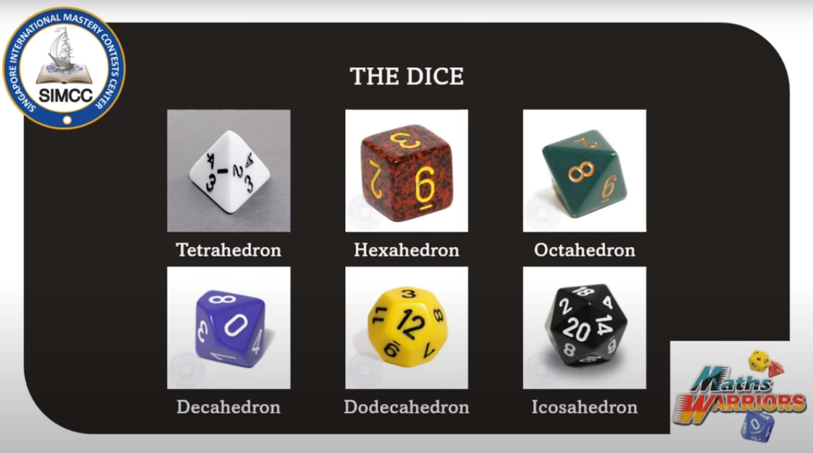
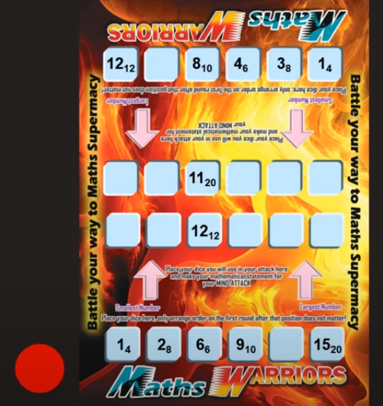
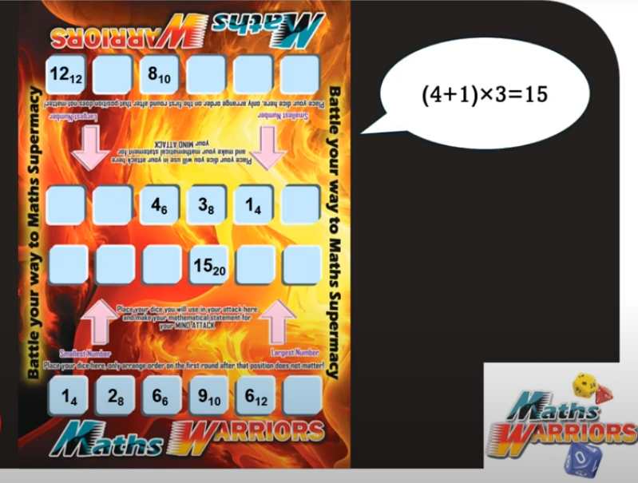

O jogo Maths Warriors envolve duas equipes de cinco jogadores que competem usando dados de diferentes formas geométricas. Dois conjuntos de 6 dados, duas equipes e um objetivo: eliminar todos os dados do seu oponente.
Formato:
Competição de times
Três divisões:
Divisão mais baixa: 1º ao 4º anos.
Divisão intermediária: 5º ao 7º anos.
Divisão mais alta: 8º ao 12º anos.
Três rodadas de 3 jogos cada
5 minutos por jogo
1 ponto por jogo ganho
Máximo de 9 pontos, mínimo de zero pontos
Os dados:

Tetraedro: 4 lados.
Hexaedro: 6 lados.
Octaedro: 8 lados.
Decaedro: 10 lados (*o zero é igual a 10).
Dodecaedro: 12 lados.
Icosaedro: 20 lados.
Como Jogar:
Primeiro Passo: Os dois times rolam os dados e arrumam em ordem de valor ascendente (crescente),
da esquerda para direita, nos seus lados do tabuleiro.
Segundo Passo: o time com o menor número pega a ficha vermelha e é a primeira a atacar.
Se os menores números de cada time forem iguais, então o segundo menor número de cada time são
comparados, e assim por diante.

Tabuleiro do jogo.
Terceiro Passo: começando com o time que possui a ficha vermelha,
cada time ataca para eliminar um dado do oponente. Sempre que uma equipe pode fazer um ataque,
ela é obrigada a faze-lo. Existem dois tipos de ataques: Strength Attack (ataque de força) e Mind Attack (ataque de mente).
Strength Attack (ataque de força): O time deve escolher um único dado para atacar o dado do oponente.
Para que o ataque seja bem-sucedido, o dado escolhido deve ter um número maior que ou igual ao
dado do oponente.
Mind Attack (ataque de mente): O time deve escolher uma combinação de 2 a 6 dados para atacar um dos
dados do oponente. Para que o ataque seja bem-sucedido, a equipe atacante deve anunciar uma
expressão matemática usando os números dos dados selecionados que sejam iguais ao número do dado do
adversário. Esta expressão deve conter o valor de cada dado escolhido exatamente uma vez e
pode incluir as operações básicas (x, /, + e -) e parênteses/colchetes.

Exemplo de um Mind attack (ataque de mente).
Dica:
Tabela das Forças dos Valores dos Dados:
Dado
Valores Fracos
Valores Médios
Valores Fortes
Tetraedro (4 lados)
1
2
3, 4
Hexaedro (6 lados)
1, 2
3
4 - 6
Octaedro (8 Lados)
1 - 3
4
5 - 8
Decaedro (10 Lados)
1 - 4
5
6 - 10
Dodecaedro (12 Lados)
1 - 5
6
7 - 12
Icosaedro (20 Lados)
1 - 9
10
11 - 20
Quarto Passo: Depois do ataque, o dado do oponente é removido do tabuleiro,
e o dado usado pelo time atacante durante o ataque deve ser re-lançado antes de retornar
a sua posição no tabuleiro.
Quinto Passo: Se um time não puder realizar nenhum tipo de ataque, ele perde o seu turno.
Sexto Passo: Se o time com a ficha está atacando e o time oponente tem apenas um dado sobrando,
a força do ataque do time com a ficha apenas será bem-sucedida se o número do dado escolhido for maior que o número do dado do oponente.
Sétimo Passo: Um time vence quando elimina todos os dados do oponente.
Gameplay com estratégias
0. O Tabuleiro Vazio
1. Os jogadores lançam os 6 dados e ordenam eles em ordem crescente, da esquerda para direita:
2. O jogador debaixo recebe a ficha vermelha, pois na comparação, os seus primeiros dados foram menores: 1 e 2, enquanto os de cima foram maiores: 1 e 3.
3. Jogada 1 com estratégia: O jogador debaixo (que recebeu a ficha vermelha) vai atacar o dado com mais faces do oponente, utilizando os seus dados com os menores valores:
4. Ele vai utilizar o Mind Attack (ataque da mente) nesta jogada 1 com estratégia, utilizando os dados: 1 (de 12 lados), 2 (de 4 lados) e 6 (de 8 lados) fazendo a conta: (1 + 2) x 6 = 18 e eliminando o dado 18 (de 20 lados) do oponente.
5. Após eliminar o dado 18 (de 20 lados), o jogador re-lança os dados utilizados novamente, e agora obtém os valores diferentes para os dados:
- antes: 1 (de 12 lados), 2 (de 4 lados) e 6 (de 6 lados).
- depois: 7 (de 12 lados), 3 (de 4 lados) e 3 (de 6 lados).
6. Então traz de volta e recoloca no seu lado do tabuleiro os dados:
7. Agora é a vez do jogador de cima que estrategicamente vai utilizar os seus dados com os menores valores: 1 (de 6 lados), 3 (de 8 lados), 4 (de 4 lados) e 4 (de 10 lados para) realizar o Mind Attack (ataque da mente) e realizar um cálculo para eliminar o dado de valor 16 (de 20 lados) realizando o cálculo: (4 x 3 + 4) x 1 = 16, o resultado precisa ser igual ao dado que ele quer eliminar do oponente, neste caso o 16.
8. Após eliminar o dado 16 (de 20 lados), o oponente relança os dados utilizados:
- antes: 1 (de 6 lados), 3 (de 8 lados), 4 (de 4 lados) e 4 (de 10 lados).
- depois: 5 (de 6 lados), 7 (de 8 lados), 1 (de 4 lados) e 2 (de 10 lados).
9. E os devolve para o seu lado do tabuleiro:
10. Agora é a vez do jogador debaixo, que vai jogar sem uma boa estratégia, utilizando apenas o Strengh Attack (ataque de força) para eliminar o dado 2 (de 10 lados), utilizando o dado 3 (de 6 lados), bastando apenas que o valor do seu dado seja maior ou igual ao dado que ele quer eliminar:
11. E assim ele elimina o dado 2 (de 10 lados) do oponente, e relança o dado utilizado, que antes era 3 (de 6 lados) e agora passa a ser 2 (de 6 lados):
12. Agora é vez do jogador de cima, que vai utilizar um Mind Attack com o cálculo: 1 x 7 = 7, com os dados: 1 (de 4 lados) e 7 (de 8 lados) para remover o dado 7 (de 12 lados) do oponente:
13. O jogador de cima relança os dados:
- antes: 1 (de 4 lados) e 7 (de 8 lados).
- depois: 3 (de 4 lados) e 8 (de 8 lados).
14. E os devolve para o seu tabuleiro:
15.Agora é vez do jogador debaixo que vai utilizar os dados: 3 (de 4 lados), 2 (de 6 lados) e 6 (de 8 lados) para eliminar o dado 11 (de 12 lados) do oponente utilizando o Mind Attack: 3 + 2 + 6 = 11.
16. Ele relança os dados:
- antes: 3 (de 4 lados), 2 (de 6 lados) e 6 (de 8 lados).
- depois: 1 (de 4 lados), 4 (de 6 lados) e 2 (de 8 lados).
17. E os devolve para o seu tabuleiro:
18. Agora é vez do jogador de cima, e ele utiliza o Strength Attack (ataque de força) com o dado de 8 lados de valor 8 para eliminar o dado 8 (de 10 lados) do oponente:
19. E relança o dado:
- antes: 8 (de 8 lados).
- depois: 6 (de 8 lados).
20. E os devolve para o seu tabuleiro:
21. Agora é a vez do jogador debaixo que vai utilizar o Mind Attack com todos os dados para eliminar o dado 6 (de 8 lados) do adversário, realizando a conta: 1 x (4 + 2) = 6.
22. E depois relança os dados utilizados:
- antes: 1 ( de 4 lados), 4 (de 8 lados) e 2 (de 8 lados).
- depois: 2 (de 4 lados), 1 (de 6 lados) e 1 (de 8 lados).
23. E os devolve para o seu tabuleiro:
24. Agora é a vez do jogador de cima, e ele observa que o jogador debaixo apesar de ter dados com vários lados, os valores são baixos, então para se proteger da próxima jogada do adversário, ele vai eliminar o dado com valor mais alto (2), para que sobre apenas os dados com valores baixos (1 e 1) e o jogador não possa mais eliminar dados.
25. O jogador de cima então utiliza um Strenght Attack com o dado 5 (de 6 lados) para remover o dado 2 (de 4 lados) do oponente porque a probabilidade de tirar 1 ou 2 no seu relançamento é menor do que se ele utilizar o seu dado 3 (de 4 lados).
26. Ele relança o dado e não tem muita sorte, pois ele tira um resultado baixo:
- antes: 5 (de 6 lados).
- depois 2 (de 6 lados).
27. E retorna o dado para o seu lado do tabuleiro:
28. Agora é vez do jogador debaixo, que agora tem a chance de ganhar devido o resultado ruim do jogador de cima. Então ele utiliza um Mind Attack: 1 + 1 = 2, para eliminar o dado 2 (de 6 lados) do oponente.
29. O jogador debaixo relança os dados:
- antes: 1 (de 6 lados) e 1 (de 8 lados).
- depois: 4 (de 6 lados) e 2 (de 8 lados).
30. E devolve os dados para o seu lado do tabuleiro:
31. O jogador de cima ainda pode ganhar, mas suas chances não são muito grandes, ele só pode fazer uma jogada de Strenght Attack (ataque de força) para atacar o dado mais fraco do oponente debaixo 2 (de 8 lados).
32. E depois relança o seu dado e com muita sorte tira o valor mais alto para o seu dado:
- antes: 3 (de 4 lados).
- depois: 4 (de 4 lados).
33. E devolve para o seu lado do tabuleiro:
34. Agora é vez do jogador debaixo, mas como ele recebeu a ficha vermelha no início do jogo então ele não pode fazer um Strenght Attack de dados iguais, então ele perde o turno.
Então quem ganha é o jogador de cima que não possui a ficha vermelha pois seu Strenght Attack pode ser igual, mas no final o jogador debaixo seu Strenght Attack precisa ser maior.
Na SIMOC o seu time vai jogar contra outros times para ganhar pontos, é importante que tanto o líder do time quanto os outros membros do time saibam jogar para escolherem as melhores estratégias durante o tempo que será dado às equipes.